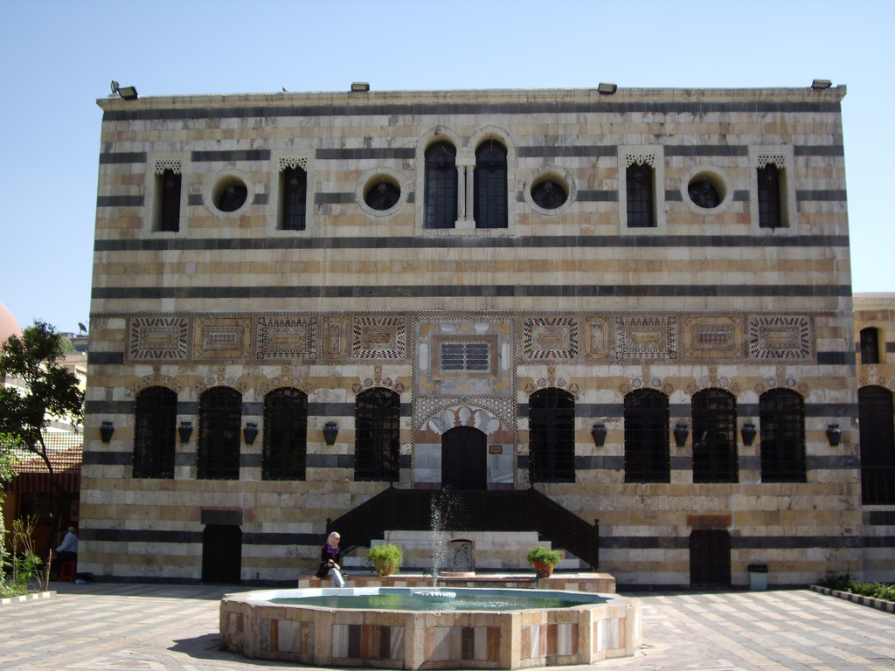

زيارة الجامع الأموي
ابدأ يومك بزيارة الجامع الأموي الكبير، تحفة العمارة الإسلامية وأحد أقدم وأعظم المساجد في العالم.
خطّة متكاملة من الصباح حتى المساء تأخذك في رحلة بين أبرز معالم دمشق وأسواقها ومطاعمها التراثية.
ابدأ الجولةست محطات موزّعة على ساعات اليوم لتعيش تجربة دمشقية متكاملة.
ابدأ يومك بزيارة الجامع الأموي الكبير، تحفة العمارة الإسلامية وأحد أقدم وأعظم المساجد في العالم.

تجوّل في أشهر أسواق دمشق المسقوفة، بين محلات الأقمشة والحلويات والتحف التراثية وعبق التاريخ.

استرح وتذوّق أشهى الأطباق الدمشقية من الفتّة والكبّة والمحاشي في أحد المطاعم الشعبية.

اكتشف روعة العمارة الدمشقية في قصر العظم بفنائه الواسع ونوافيره وزخارفه الخشبية البديعة.

تمشَّ في الأزقّة العتيقة بين البيوت الدمشقية التقليدية واستمتع بعبق الياسمين قبيل الغروب.

اختم يومك بعشاء أصيل في بيت دمشقي قديم تحوّل إلى مطعم، وسط أجواء تراثية لا تُنسى.
إرشادات بسيطة تساعدك على الاستمتاع بالبرنامج بأفضل صورة.
ستمشي كثيراً بين الأزقّة والأسواق، فاحرص على حذاء مريح.
احمل الماء وقبّعة خاصةً في فصل الصيف لتجنّب الحرارة.
لا تنسَ كاميرتك لالتقاط جمال العمارة الدمشقية.
اتّبع الجدول لتتمكّن من زيارة جميع المحطات بهدوء.